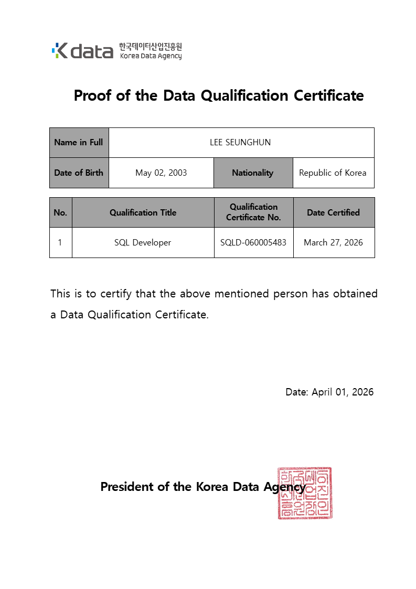

QUALITY ENGINEER
안녕하세요! 저는 객관적인 테스트와
데이터로 개발자의 착각, 즉 문제를 찾아
깨부수는 퀄리티 엔지니어 입니다.
As Arthur Schopenhauer profoundly stated,
'People see only what they want to see and hear only what they want to hear.'
This cognitive bias often leads leaders to assume their processes are inherently problem-free.
However, true quality is born from the courage to confront unseen flaws and the discipline to challenge every assumption with objective data.
About
About me
이승훈 만22세 서울특별시 광진구 구의동 560-7 포레스트 빌리지 101동 402호 거주
"기획, 디자인, 개발, 테스트 전부 할 수 있는 AI 그 자체가 되려고 노력 중"
서일대학교 소프트웨어공학과 3.68/4.5, 수동적인 QA가 아닌 다른 분야의 개발자들과도
소통할 수 있는 QE를 지향하며 Javascript, Python, Playwright등 다양하게 공부하고 있습니다.
진정한 품질은 보이지 않는 결함을 직시하는 용기와 객관적인 데이터에서 나온다는 생각을 바탕으로 성장하고 있습니다.
Skill
Frontend Python Playwright


26/3 SQLD 취득
26/5 ADSP 응시예정
26/7 정보처리산업기사 응시예정
26/9 CSTS(일반) 응시예정
26/10 TOEIC 응시예정